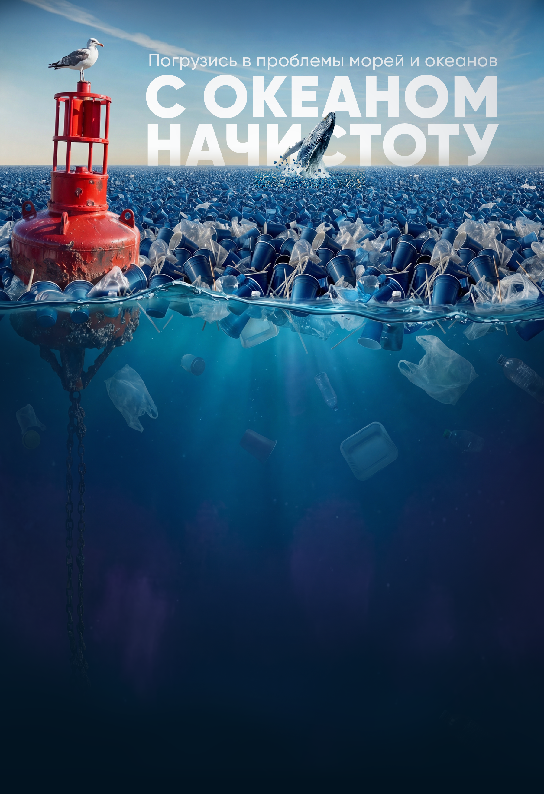
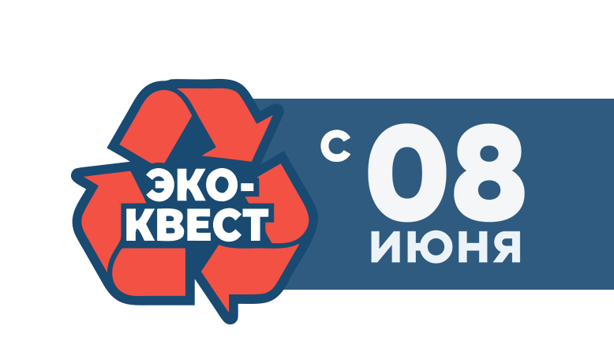
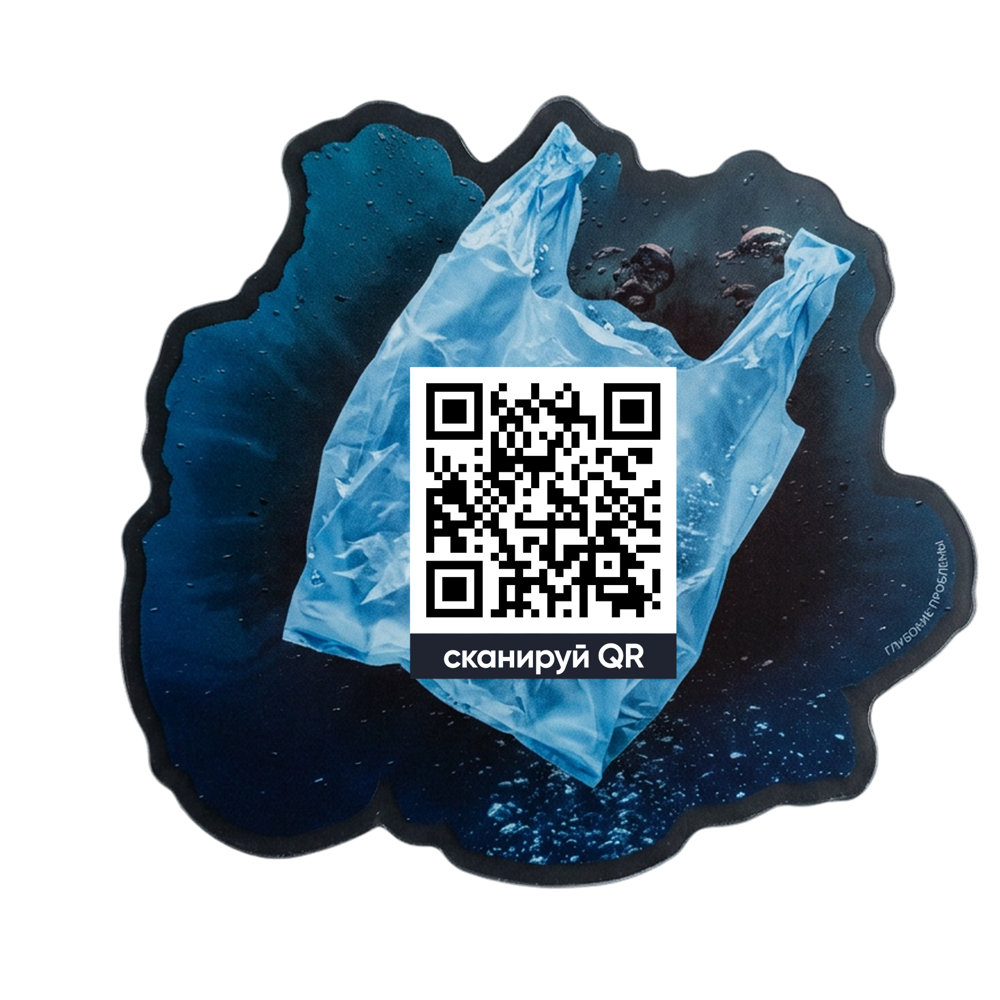
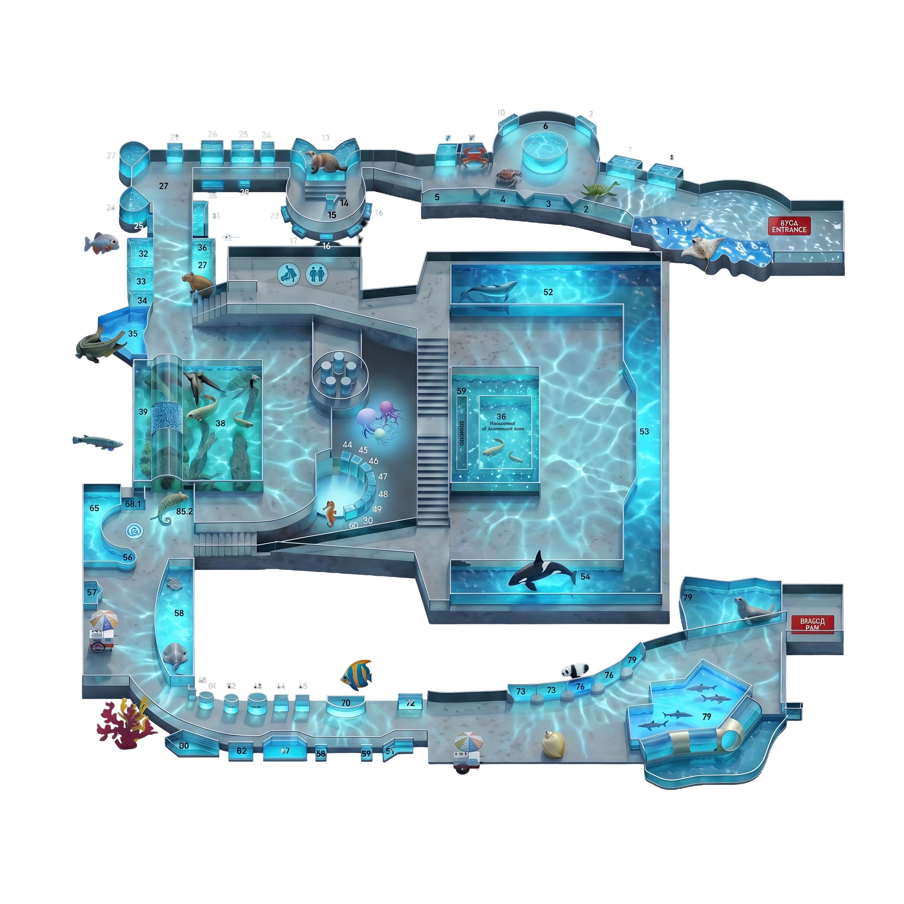
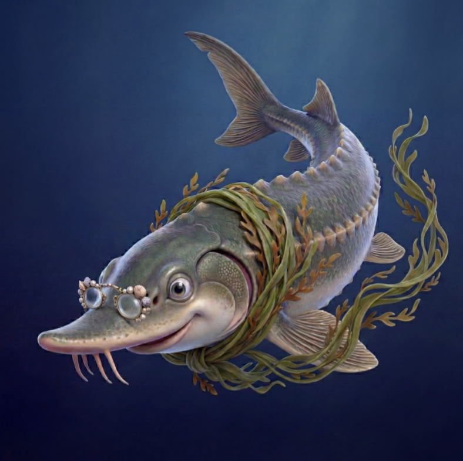
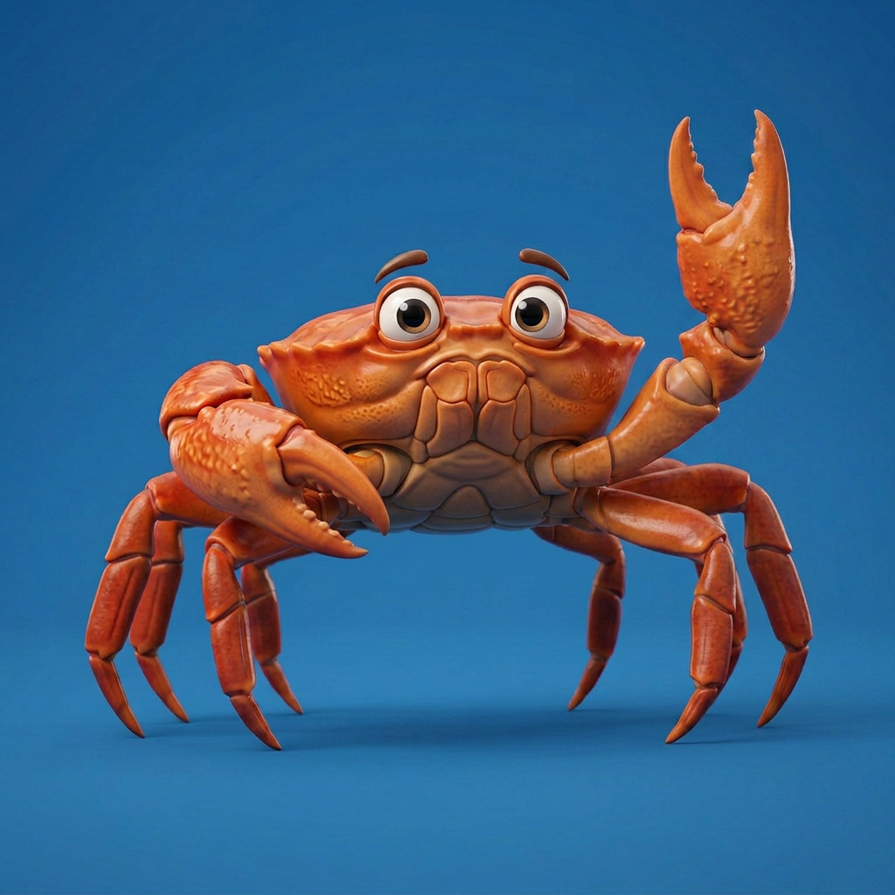
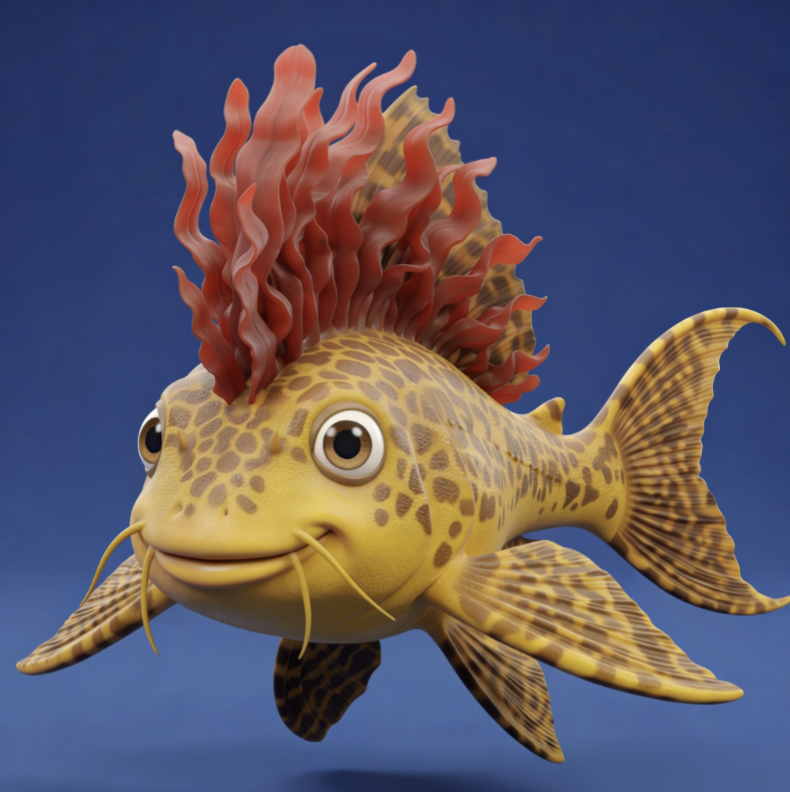
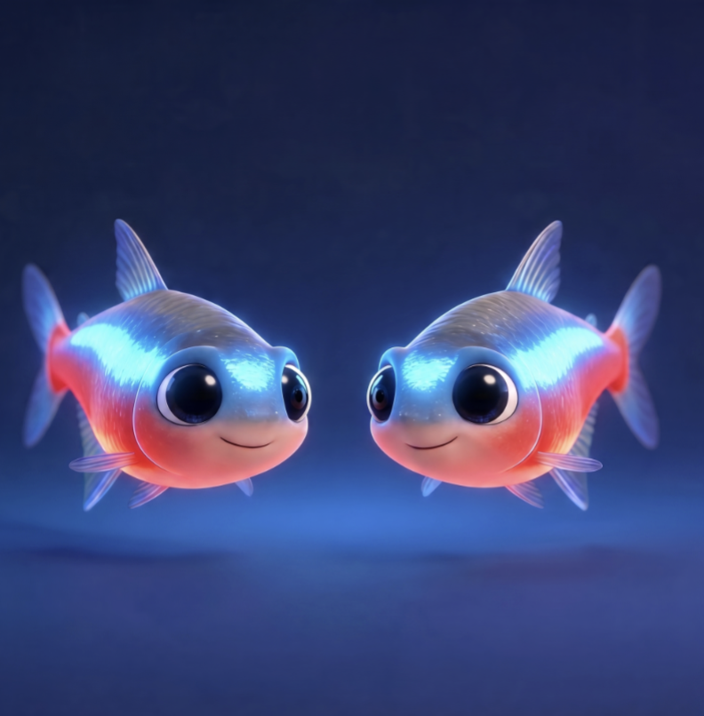
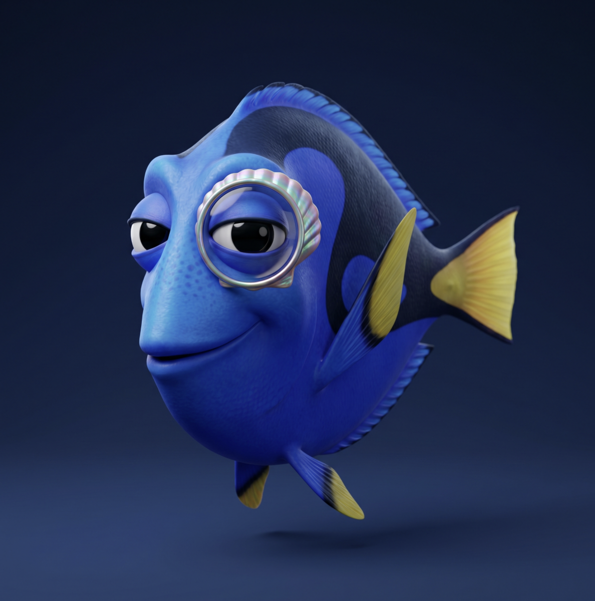
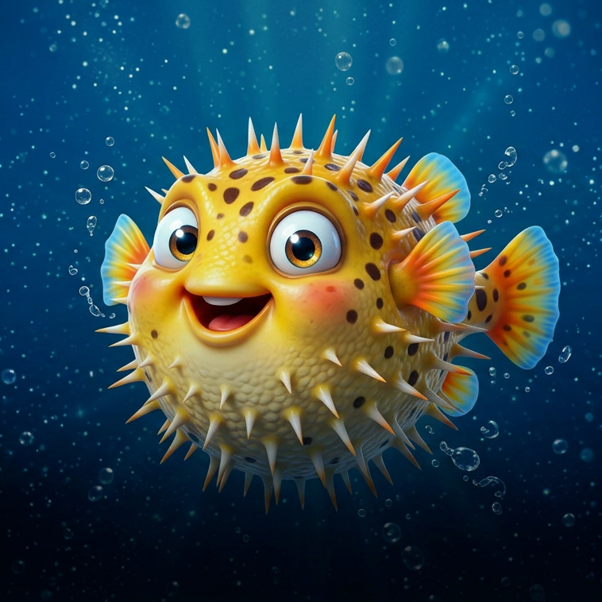

«С океаном начистоту» — это образовательный интерактивный проект, который в понятном формате рассказывает о загрязнении мирового океана, показывает последствия для водных обитателей и предлагает простые действия, доступные каждому человеку.
Проект стартует во Всемирный день Океана 8 июня 2026 года в экспозиции Москвариума на ВДНХ.
Никаких приложений, регистраций и анкет. Открываешь WebAR прямо в браузере телефона — и попадаешь в живой аквариум, где появляются загрязнения. Чем больше очистишь — тем больше получишь.

Стандартный билет в Москвариум на Проспекте Мира 119с23.
Наклейка «смятый стаканчик» на стекле аквариума.
Прямо в Safari или Chrome — без установки.
На реальный аквариум — мы дорисовываем загрязнения.
Бутылки, плёнка, нефть, микропластик — всё, что незаметно глазу.
Сачок, скиммер, бластер, пылесос или гарпун — на каждой локации своё.
Маскот рассказывает о загрязнении и даёт практический совет.
За каждую локацию — буква от секретного кодового слова.
Собрав слово целиком — получаешь доступ к скрытой странице.
От перелётных скатов на входе — к большому морскому аквариуму с китом в финале. Каждая точка — своя экосистема и свой тип угрозы.

Маскоты ведут по маршруту, рассказывают о своём аквариуме и дают практический совет о том, как помочь океану в обычной жизни.










После каждой локации в локальной памяти браузера сохраняется буква. Когда соберёшь все 10 — откроется скрытая страница с цифровыми наградами и полезными материалами.
Загрязнение воды связано не только с заводами. Большая часть мусора в реках и океанах — следствие повседневных привычек: одноразовый пластик, бытовая химия, синтетическая одежда. Загрязнения попадают в воду и распространяются по экосистеме, влияя на животных и в конечном итоге — на нас самих.
Refuse, Reduce, Reuse, Recycle — четыре уровня экологичной привычки. От отказа от лишнего до правильной сортировки. Выбирай то, что реально подходит твоему ритму.
Москвариум и BBDO работают вместе с экологическими организациями, СМИ и образовательными платформами, которые поддерживают тему чистой воды.